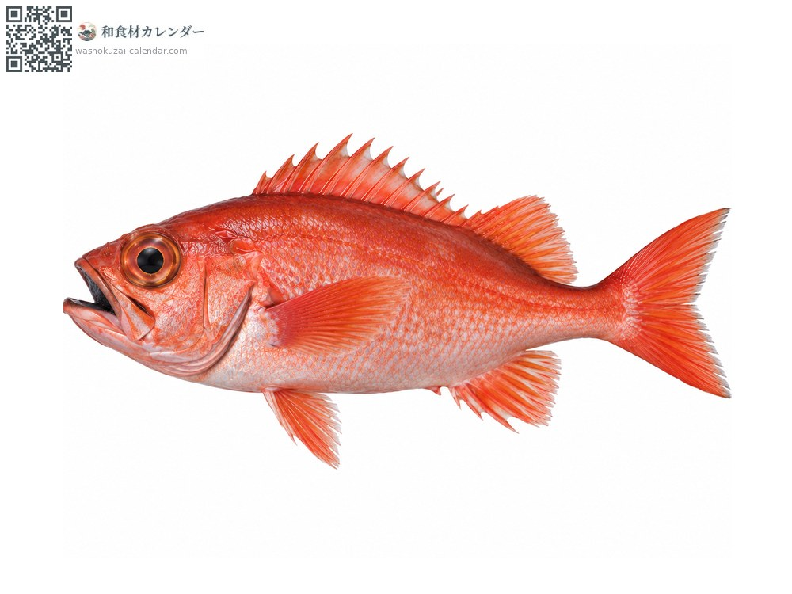
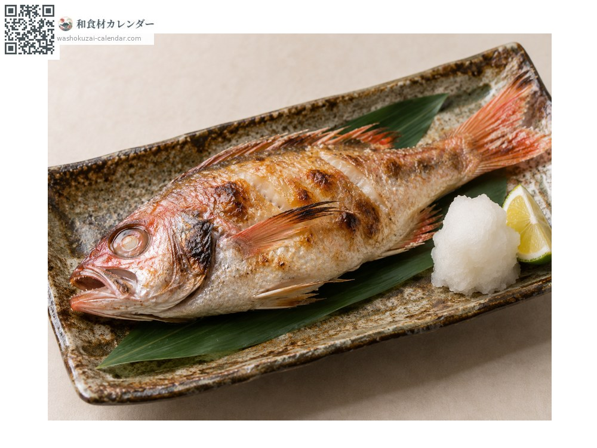
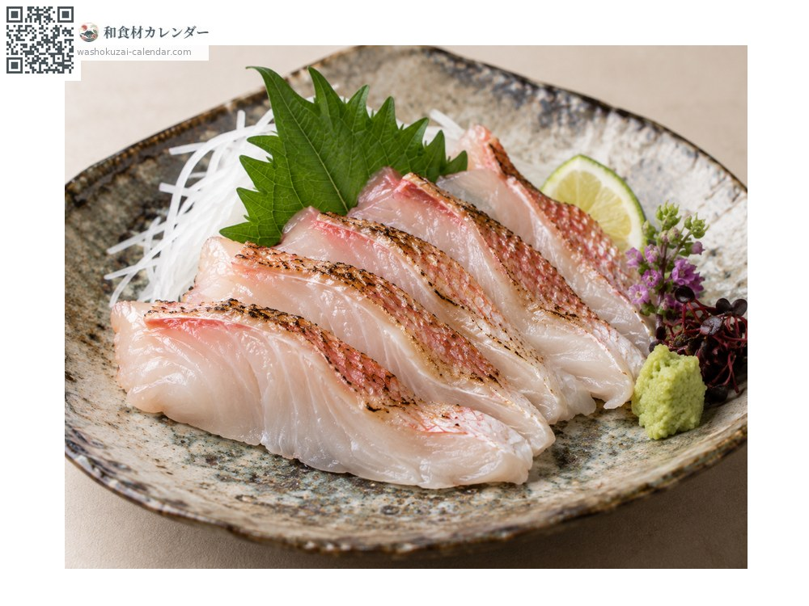
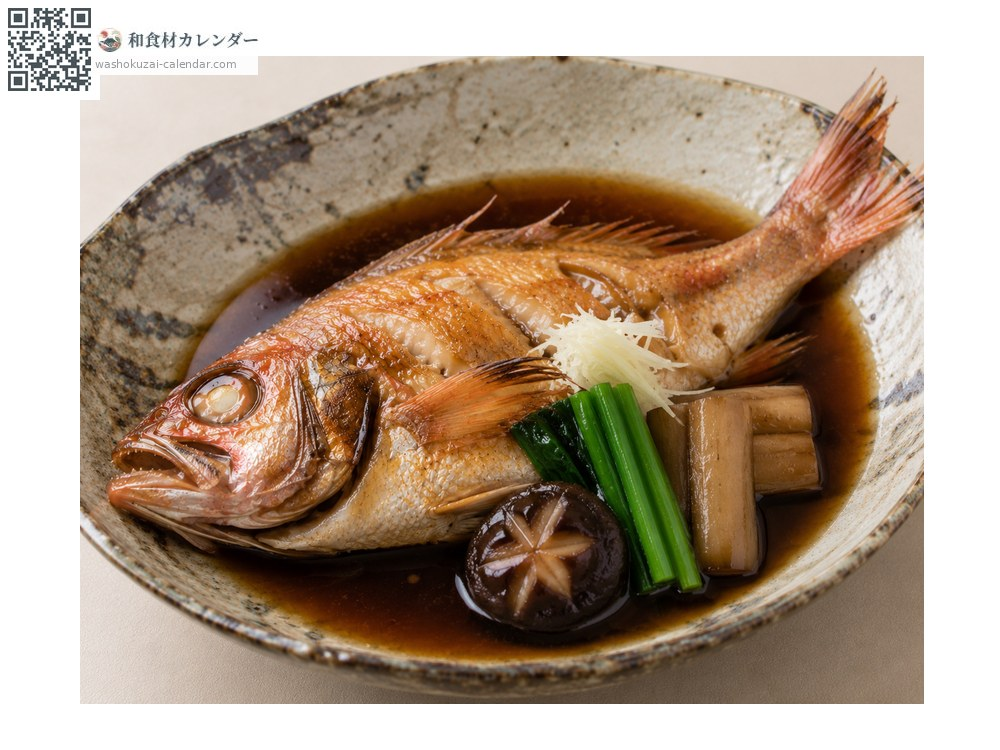
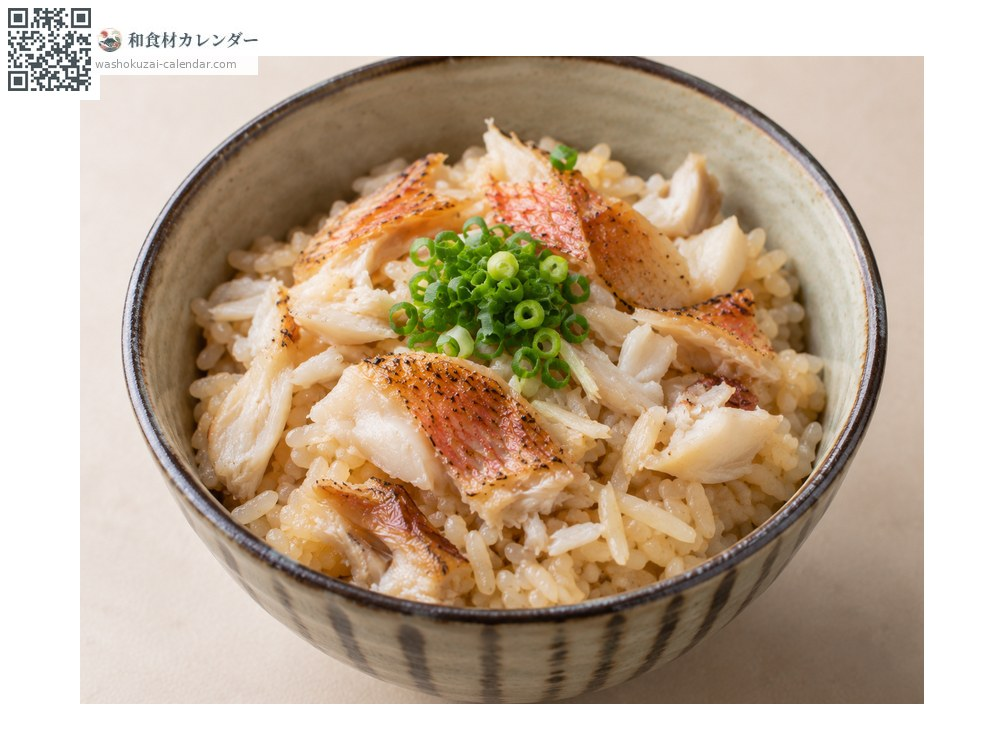

Blackthroat seaperch
ノドグロ のどぐろ nodoguro
Also known asnodoguro, akamutsu
At its best in Aug, Sep, Oct, Nov

When it is at its best
In seasonAvailable
How to cook

Shioyaki (salt-grilled)
Grilled until the fat drips. The skin turns fragrant; serve with grated daikon.

Sashimi
A white fish, yet so rich it melts in the mouth. Also good lightly seared.

Nitsuke (simmered in sweet soy)
Simmered in sweet soy. The rich fat suits a slightly stronger seasoning.

Nodoguro rice
Grilled, flaked, and cooked with rice so the fat carries into the grains.
How to choose
A vivid red body with clear eyes. A firm belly; larger fish carry more fat.
Storage
The high fat content oxidises easily. Gut and refrigerate, using within two days.
Main areas
Good to know
Its formal name is akamutsu. The black inside of its mouth gives it the name nodoguro, meaning black throat. Though a white fish, fat runs through the whole body, earning it the name toro of white fish.